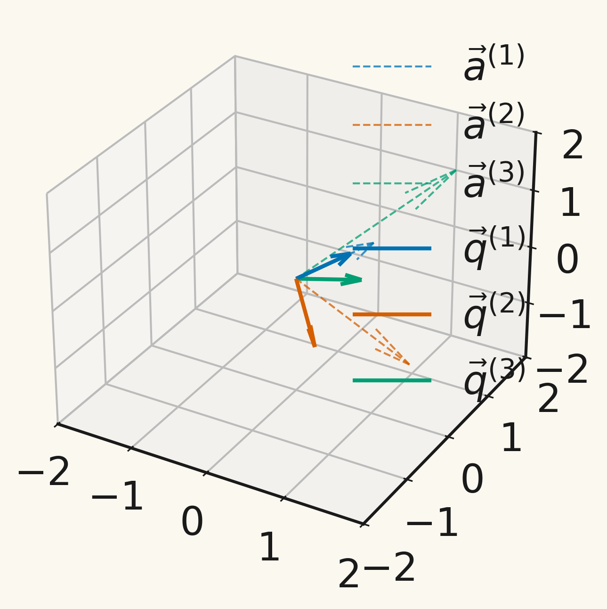
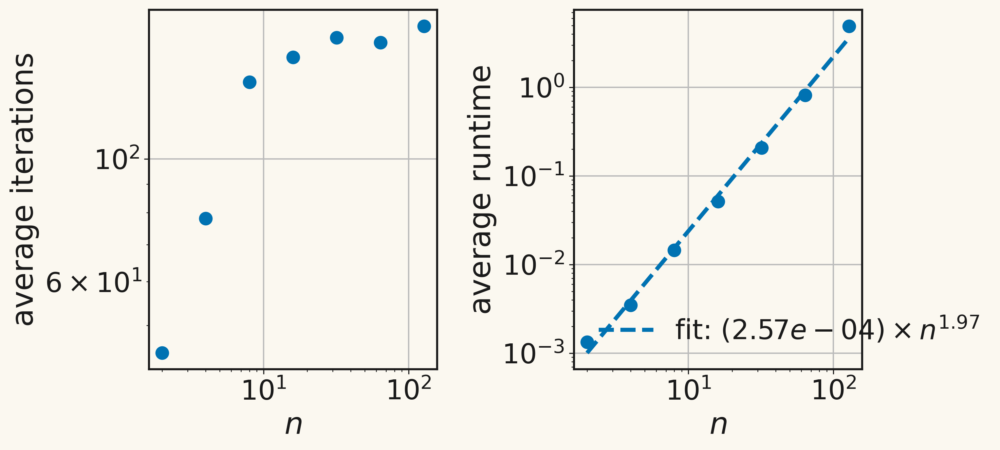

Derive and apply the Gram-Schmidt process to compute a QR factorisation of a matrix by hand.
Implement the QR algorithm in Python and evaluate its computational feasibility on large matrices.
Understand how the QR algorithm preserves eigenvalues using similarity
Chapter 8
The problem
Finding numbers \(\lambda\) (eigenvalues) and vectors \(\vec{x}\) (eigenvectors) which satisfy the equation: \[\begin{equation}
A \vec{x} = \lambda \vec{x}.
\end{equation}\]
Grand strategy
To find eigenvalues and eigenvectors of \(A\), our “grand strategy” is to find a sequence of matrices \(P_1, P_2, \ldots\) to form a sequence of matrices: \[\begin{gather*}
A \\
P_1^{-1} A P \\
P_2^{-1} P_1^{-1} A P_1 P_2 \\
P_3^{-1} P_2^{-1} P_1^{-1} A P_1 P_2 P_3 \\
\ldots
\end{gather*}\] We aim to get all the way to a simple matrix where we read off the eigenvalues and eigenvectors.
Example
For example, if at level \(m\), say, we have transformed \(A\) into an upper triangular matrix the eigenvalues are the diagonal of the matrix \[\begin{equation*}
P_m^{-1} P_{m-1}^{-1} \cdots P_2^{-1} P_1^{-1} A P_1 P_2 \cdots P_{m-1} P_m,
\end{equation*}\] and the eigenvectors are the columns of the matrix \[\begin{equation*}
S_m = P_1 P_2 \cdots P_{m-1} P_m.
\end{equation*}\]
Orthogonal matrices
In the example below, and many others, we see that we typically want the matrices \(P_j\) to be orthogonal or orthonormal.
A (real-valued) matrix \(Q\) is orthogonal if \(Q^T Q\) is diagonal and a (real-valued) matrix \(Q\) is orthonormal if \(Q^T Q = I_n\).
Orthogonal matrices - column view
In other words, if denote by \(\vec{q}^{(1)}, \ldots, \vec{q}^{(n)}\) the columns of \(Q\), then \(Q\) is orthogonal if \[\begin{equation*}
\vec{q}^{(i)} \cdot \vec{q}^{(j)} = 0 \quad \text{ if } i \neq j,
\end{equation*}\] and \(Q\) is orthonormal if \[\begin{equation*}
\vec{q}^{(i)} \cdot \vec{q}^{(j)} =
\begin{cases}
0 & \text{ if } i \neq j \\
1 & \text{ if } i = j.
\end{cases}
\end{equation*}\]
Example
Show that the rotation matrix \(R(\theta)\) is orthonormal. \[
R(\theta) =
\begin{pmatrix}
\cos \theta & - \sin \theta \\
\sin \theta & \cos \theta
\end{pmatrix}.
\]
QR algorithm
Module learning objective
Understand how the QR algorithm preserves eigenvalues using similarity.
The QR algorithm is an iterative method for computing eigenvalues and eigenvectors.
At each step a matrix is factored into a product in a similar fashion to LU factorisation.
In this case, we factor a matrix, \(A\) into a product of an orthonormal matrix, \(Q\), and an upper triangular matrix, \(R\): \[
A = Q R.
\] This is QR factorisation.
The algorithm
Given a matrix \(A\), the algorithm repeatedly applies QR factorisation. First, we set \(A^{(0)} = A\), then we successively perform for \(k=0, 1, 2, \ldots\):
Compute the QR factorisation of \(A^{(k)}\) into an orthonormal part and upper triangular part \[
A^{(k)} = Q^{(k)} R^{(k)};
\]
Update the matrix \(A^{(k+1)}\) recombining \(Q\) and \(R\) in the reverse order: \[
A^{(k+1)} = R^{(k)} Q^{(k)}.
\]
How does it work?
Rearranging the first step within each iteration, we see that \[
R^{(k)} = (Q^{(k)})^{-1} A^{(k)} = (Q^{(k)})^T A^{(k)}.
\] Substituting this value of \(R^{(k)}\) into the second step and rearranging gives \[
Q^{(k)} A^{(k+1)} = A^{(k)} Q^{(k)}
\] and we see that at each step we are finding a sequence of similar matrices, all with the same eigenvalues.
How does it work? ii
We can additionally find the eigenvectors of \(A\) by forming the product \[
Q = Q^{(1)} Q^{(2)} \cdots Q^{(m)}.
\]
The Gram-Schmidt process
Module learning objective
Derive and apply the Gram-Schmidt process to compute a QR factorisation of a
Verify the orthonormality conditions for \(\vec{q}^{(1)}, \vec{q}^{(2)}\) and \(\vec{q}^{(3)}\).

How does this help?
We can even do better than simply post computing \(R\) through multiplying \(Q^T A\). Let’s revisit the update formula for column \(j\): \[\begin{align*}
\vec{u}^{(j)} & = \vec{a}^{(j)} - \sum_{i=1}^{j-1} (\vec{a}^{(j)} \cdot
\vec{q}^{(i)} ) \vec{q}^{(i)} \\
\vec{q}^{(j)} & = \frac{\vec{u}^{(j)}}{\|\vec{u}^{(j)}\|}.
\end{align*}\] Let’s define a matrix \(R\) by \[
R_{ij} = \begin{cases}
\vec{a}^{(j)} \cdot \vec{q}^{(i)} & \text{if}\quad i < j \\
\| \vec{u}^{(j)} \| & \text{if}\quad i = j \\
0 & \text{if}\quad i > j,
\end{cases}
\] then …
Exercise
Continue the QR-factorisation process by computing \(B = R Q\) and apply the Gram-Schmidt process to the columns of \(B\).
Remark
The Gram-Schmidt algorithm relies on the fact that after each projection there should be something left - i.e. \(\vec{u}^{(j)}\) should be non-zero.
If \(\vec{a}^{(j)}\) is in the span of \(\{ \vec{q}^{(1)}, \ldots, \vec{q}^{(j-1)}
\}\), then the projection onto \(\vec{u}^{(j)}\) will give \(\vec{0}\).
There are a few ways to test this, but the key idea is that if \(A\) is non-singular then we will always have \(\vec{u}^{(j)} \neq \vec{0}\) – at least in exact-precision calculations…
Python QR factorisation using Gram-Schmidt
Let’s try it out!
Let’s test it without our example above:
Finding eigenvalues and eigenvectors
Module learning objective
Implement the QR algorithm in Python and evaluate its computational feasibility on large matrices.
Let’s try it out
We test this out in code first for the matrix from a previous example:
Correctness and convergence
Let’s see what happens when we try this same approach for a bigger symmetric matrices. Here we have a test that samples ten different random matrices and computes the average number of iterations, average run time and maximum error in the eigenvalue equation.
Results

Summary
The “grand strategy” for finding eigenvalues of large matrices is to build a sequence of matrices similar to \(A\), aiming for a triangular (or diagonal) matrix whose eigenvalues can simply be read off the diagonal.
The QR algorithm builds this sequence by repeatedly factorising \(A^{(k)} = Q^{(k)} R^{(k)}\) into an orthogonal matrix \(Q^{(k)}\) and an upper triangular matrix \(R^{(k)}\), then recombining them in the opposite order, \(A^{(k+1)} = R^{(k)} Q^{(k)}\). Because \(Q^{(k)}\) is orthogonal, each \(A^{(k+1)}\) is similar to \(A^{(k)}\), so every matrix in the sequence has the same eigenvalues as the original \(A\).
The Gram-Schmidt process gives us a concrete, implementable way to compute a QR factorisation: it turns the columns of \(A\) into an orthonormal set of vectors \(Q\), tracking the projection coefficients used along the way in an upper triangular matrix \(R\).
Our Python implementation confirms, empirically, that the QR algorithm is both correct (it reproduces the eigenvalues and eigenvectors found by hand) and feasible: unlike solving the characteristic equation directly, we can apply our method to large matrices.